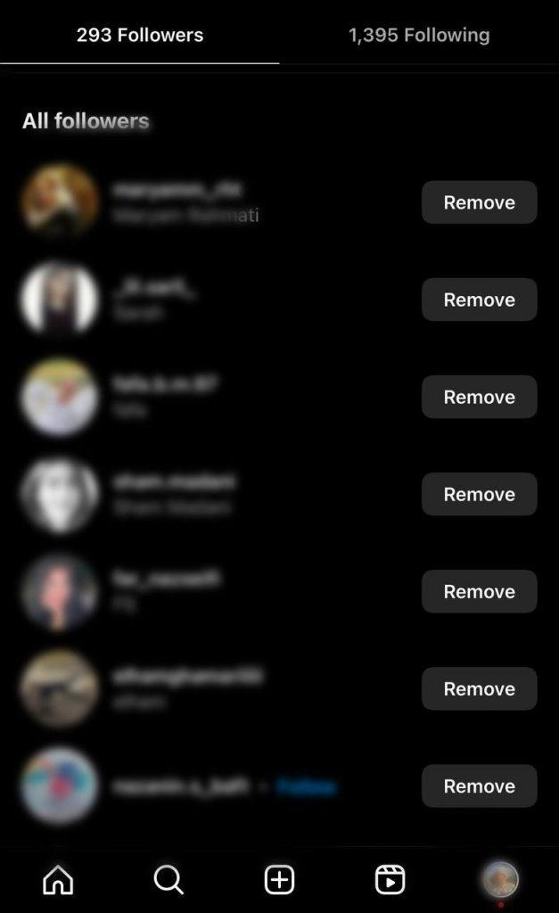

Removing a follower is a different action from unfollowing someone, and it's one of Instagram's more overlooked privacy tools. Most people know how to unfollow an account, but far fewer know that Instagram also lets you remove someone from your own followers list, quietly, with no notification sent, and no explanation required.
Here's exactly how it works, what changes afterward, and what stays exactly the same.
How removing a follower works
To remove someone from your followers list: open your followers list from your profile, find the account you want to remove, and tap the three-dot menu next to their name. Select Remove, and they're taken off your followers list immediately.
That's the entire process. No confirmation email, no waiting period, and critically, no notification sent to them at all. The moment you remove someone, nothing visible happens on their end.

What actually changes after you remove someone
- They no longer follow you. Your posts and stories stop appearing in their feed the way a follower's normally would. If your account is public, they can still find and view your content by searching for your profile directly. If your account is private, removing them cuts off their access entirely, the same as if they'd never followed you.
- They can follow you again. Removing someone doesn't block them or prevent a future follow. They can search your profile and follow again at any time, instantly if you're public, or by sending a new follow request if you're private, which you can then approve or decline.
- You still follow them, unaffected. Removing a follower only changes their relationship to you, not yours to them. If you were following them before, you still are; removing them as a follower has no effect on your own following list.
Does removing a follower notify them?
No. This is the detail most people don't realize: Instagram sends no alert, message, or indication of any kind when you remove someone. The only way they'd ever find out is if they happen to notice you're no longer in their following list, or if they use a tool that compares their following list against a previous snapshot.
This is worth being precise about: from the removed person's perspective, if they later check who they're "following" versus who follows them back using a tool like Unfollow Finder, you'll show up as someone who's no longer following them, even though they never took any unfollow action themselves. Instagram's remove-follower feature effectively performs a silent, one-sided unfollow from their side, without them doing anything or being told anything happened. This is closely related to whether Instagram notifies unfollows in general.
Why people remove followers
A few common reasons this feature gets used:
- Managing a private account's audience. On a private account, only approved followers can see your content. Removing someone is a direct way to revoke that access without the more visible step of blocking them.
- Cleaning up unrecognized followers. If accounts you don't know start following you, removing them keeps your audience closer to people you actually recognize or want engaging with your content.
- Managing your follower-to-following ratio. Some people use removal as part of periodically trimming their audience to keep their numbers reflecting genuine, relevant connections.
Does removing someone affect past interactions?
No. Comments left on each other's posts, tags, and direct message history all remain exactly as they were, visible to both accounts, unless separately deleted. Removing a follower only changes the follow relationship going forward. It doesn't retroactively touch anything you've already shared or said to each other.
Remove follower vs. block vs. unfollow: the difference
These three actions get confused constantly, so it's worth being clear:
- Unfollow: you stop following someone. Affects only your own following list.
- Remove follower: you take someone off your followers list. Affects only who follows you, silently, with no notification.
- Block: a much more complete separation. Blocking prevents someone from finding your profile, seeing your content, or interacting with you at all, and unlike removing a follower, it also removes any existing follow relationship in both directions.
If your goal is simply "I don't want this specific person following me" without cutting off all future contact, removing them as a follower is the more measured option. Block is the tool for when you want a harder, more complete boundary.